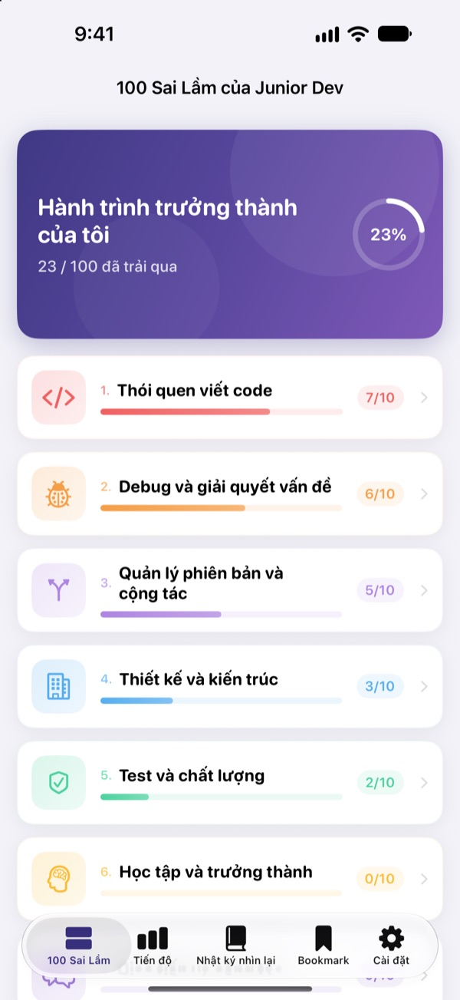
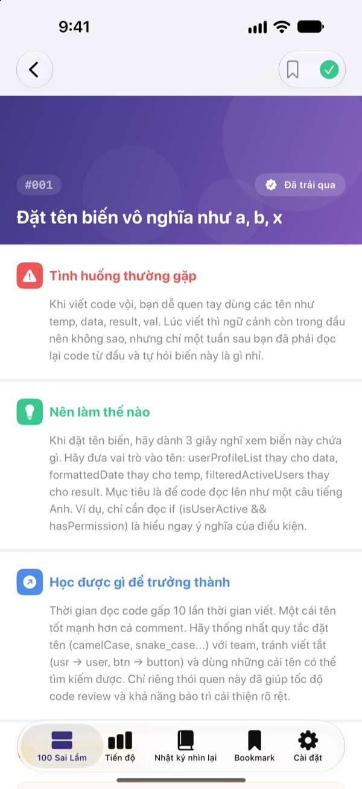
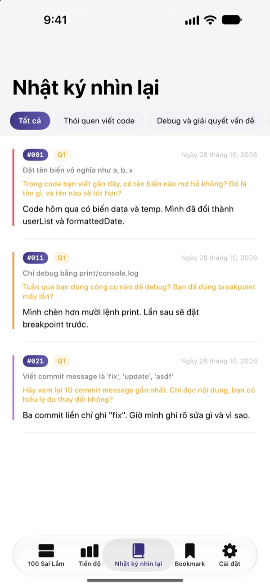
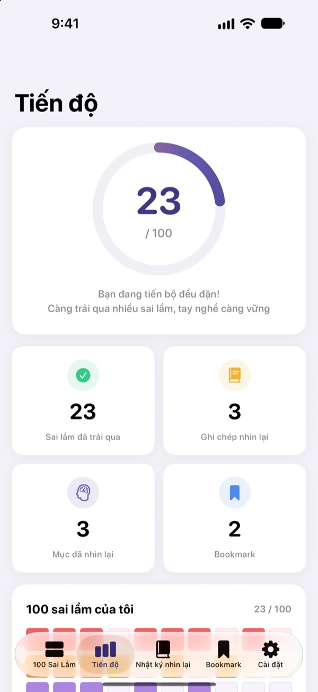

Biết trước sai lầm,
đỡ phải trả giá
Tổng hợp 100 sai lầm lập trình viên mới hay mắc nhất. Mỗi sai lầm cho biết chuyện gì xảy ra, nên làm gì và học được gì, rồi bạn trả lời một câu hỏi nhìn lại để không vấp cùng một lỗi hai lần.
30 sai lầm đầu tiên miễn phí. Dùng trên iPhone, iPad và Mac.

Mở thử một sai lầm
Đây là 10 sai lầm của nhóm đầu tiên được mở miễn phí, giữ nguyên từng chữ như trong ứng dụng. Lỗi nào bạn đã từng gặp, hãy đánh dấu Đã trải qua.
Lại bị nhắc đúng lỗi cũ khi review code?
Tên biến khó hiểu, hàm dài 200 dòng, code copy dán khắp nơi. Senior nào cũng từng trải qua, nhưng mình thường chỉ nhận ra khi đã vấp. 100 Sai Lầm Junior Dev cho bạn thấy những lỗi đó trước và giúp bạn nhìn lại công việc của chính mình để không lặp lại.
Chuyện gì xảy ra, nên làm gì, học được gì
Mỗi sai lầm được giải thích thành ba phần: chuyện gì xảy ra, nên làm gì và bạn học được gì từ đó.
Gồm 10 nhóm, từ thói quen viết code đến bảo mật và hiệu năng, chỉ chọn những lỗi lặp đi lặp lại trong công việc thực tế.

Câu hỏi nhìn lại để nhớ lâu
Mỗi sai lầm có 4 câu hỏi nhìn lại, tổng cộng 400 câu. Trả lời khi nghĩ về dự án của chính bạn, điều đã đọc sẽ thành kinh nghiệm.
Câu trả lời được gom vào nhật ký nhìn lại theo từng nhóm, đọc lại lúc nào cũng được.

Thấy rõ mình đã tiến bộ bao nhiêu
Đánh dấu những sai lầm bạn từng gặp, tiến độ theo nhóm và tổng thể sẽ tăng dần. Lưu dấu trang những gì muốn xem lại.
Mọi thứ đồng bộ qua iCloud giữa iPhone, iPad và Mac.

Bắt đầu với 3 bước
- 1
Chọn một nhóm
Thói quen viết code, debug và quản lý phiên bản được mở miễn phí.
- 2
Đọc và đánh dấu
Chạm Đã trải qua ở những lỗi bạn từng mắc.
- 3
Trả lời câu hỏi
Nhớ lại trải nghiệm của mình và viết dù chỉ một câu. Câu trả lời được lưu vào nhật ký nhìn lại.
10 nhóm sai lầm
- Thói quen viết code
- #001–#010 · Miễn phí
- Debug và giải quyết vấn đề
- #011–#020 · Miễn phí
- Quản lý phiên bản và cộng tác
- #021–#030 · Miễn phí
- Thiết kế và kiến trúc
- #031–#040 · PRO
- Test và chất lượng
- #041–#050 · PRO
- Học tập và trưởng thành
- #051–#060 · PRO
- Giao tiếp và cộng tác
- #061–#070 · PRO
- Deploy và vận hành
- #071–#080 · PRO
- Bảo mật và dữ liệu
- #081–#090 · PRO
- Hiệu năng và tối ưu hóa
- #091–#100 · PRO
Mỗi nhóm có 10 sai lầm, mỗi sai lầm có 4 câu hỏi nhìn lại.
30 sai lầm miễn phí, đủ 100 với PRO
Miễn phí
- 3 nhóm đầu tiên, 30 sai lầm
- 120 câu hỏi nhìn lại của các sai lầm đó
- Đánh dấu, nhật ký nhìn lại, tiến độ và dấu trang
- Đồng bộ iCloud (iPhone, iPad, Mac)
100 Sai Lầm Junior Dev PRO
- 7 nhóm còn lại, thêm 70 sai lầm (#031–#100)
- Thêm 280 câu hỏi nhìn lại
- Mọi bản cập nhật nội dung sau này
Chọn gói tháng, gói năm (rẻ hơn gói tháng tới 50%) hoặc mua một lần dùng trọn đời.
Không thu thập dữ liệu cá nhân, không công cụ phân tích, không quảng cáo.
Câu hỏi thường gặp
Miễn phí được những gì?
Toàn bộ 30 sai lầm và câu hỏi của các nhóm Thói quen viết code, Debug và giải quyết vấn đề, Quản lý phiên bản và cộng tác. Đánh dấu, nhật ký nhìn lại, tiến độ, dấu trang và đồng bộ iCloud cũng miễn phí.
Dùng PRO đã mua trên thiết bị khác thế nào?
Đăng nhập cùng Apple ID rồi chạm Khôi phục giao dịch mua ở màn hình đăng ký.
Hủy gói đăng ký thế nào?
Bất cứ lúc nào trong Cài đặt › Apple ID › Đăng ký. Gói sẽ tự gia hạn nếu bạn không hủy ít nhất 24 giờ trước khi kỳ hiện tại kết thúc. Gói trọn đời chỉ thanh toán một lần.
Dữ liệu không đồng bộ giữa các thiết bị.
Kiểm tra mọi thiết bị đều đăng nhập iCloud bằng cùng Apple ID và đã bật iCloud cho ứng dụng này trong Cài đặt. Đồng bộ cũng cần có kết nối mạng.
Muốn xóa toàn bộ dữ liệu.
Chạm Đặt lại toàn bộ dữ liệu trong phần cài đặt của ứng dụng. Đánh dấu, câu trả lời và dấu trang sẽ bị xóa và không thể khôi phục.
Dùng được trên thiết bị nào?
iPhone, iPad và Mac. PRO được mở khóa trên mọi thiết bị dùng cùng Apple ID.
Dữ liệu của tôi có bị gửi đi đâu không?
Không. Đánh dấu và câu trả lời chỉ nằm trên thiết bị và iCloud của chính bạn. Ứng dụng không thu thập dữ liệu cá nhân, không có công cụ phân tích hay quảng cáo.
Có câu hỏi hoặc góp ý? Hãy gửi thư đến leeo@kakao.com.